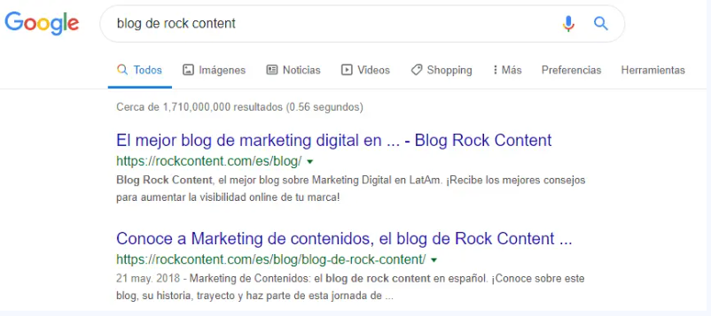
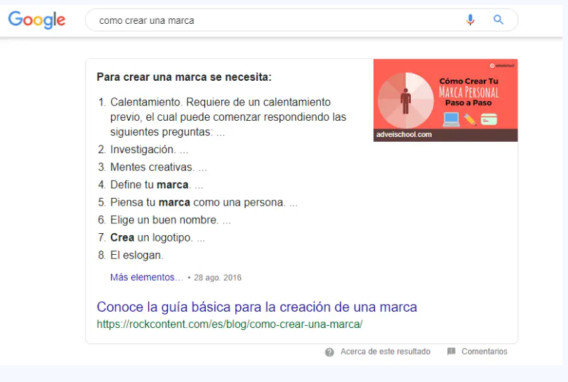
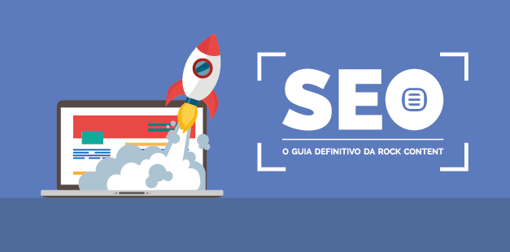
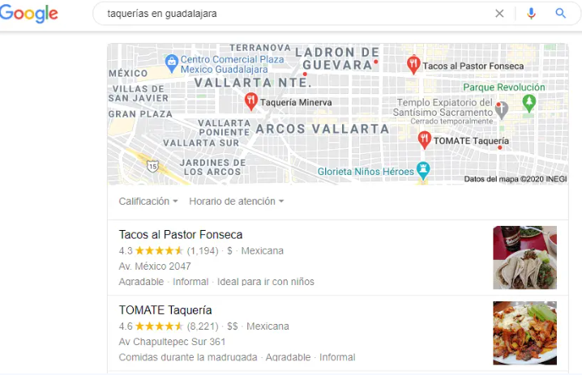

SEO significa Search Engine Optimization (Optimización para motores de búsqueda). Se trata del conjunto de estrategias y técnicas de optimización que se hacen en una página web para que aparezca orgánicamente en buscadores de Internet como Google, Yahoo o Youtube. La correcta aplicación del SEO puede causar incrementos expresivos en el tráfico y la visibilidad de las marcas en Internet.
Una de las mayores metas de las empresas que invierten en Marketing Digital es alcanzar las primeras posiciones en los motores de búsqueda — después de todo, ¿quién no quiere clics gratuitos y más visitantes en su sitio?
Pero en un terreno tan feroz y competitivo como es Internet, hacer que tu sitio web se destaque entre los millones de páginas que hay en la red parece una tarea imposible. Y digo que parece porque en realidad no lo es.
Sin embargo, estar en Internet no es suficiente para garantizar que tu sitio, e-commerce o blog logre un lugar en la primera página de Google: es necesario invertir en una estrategia específica para optimizar los resultados y asegurar que tu negocio alcance un buen posicionamiento web para las palabras clave más importantes de su segmento.
Con el SEO u Optimización para Motores de Búsqueda — del inglés Search Engine Optimization— puedes hacer que tu sitio web aparezca en búsquedas relevantes, conectando tus contenidos con las personas que están buscando productos o servicios como el que ofreces.
¡Es la operación perfecta!
Pero debes saber que hacer SEO requiere de mucho estudio para entender terminologías, construir estrategias y aplicar prácticas que te lleven a la cima de las páginas de resultados de Google.
¡No te preocupes! Sea que quieras dar tus primeros pasos en el mundo del posicionamiento en buscadores, o que quieras refrescar tu conocimiento, en esta guía completa de SEO te explicaremos todo lo que tienes que saber sobre la materia.
En este artículo encontrarás:
SEO es la sigla para Search Engine Optimization, que significa "optimización para motores de búsqueda". Consiste en una serie de técnicas, disciplinas y estrategias de optimización que se implementan en las páginas de un sitio web o blog para mejorar su posicionamiento en los buscadores.
Esa estrategia de Marketing es fundamental para que tu empresa gane destaque, visibilidad en el mundo digital y, por consecuencia, más leads, clientes y facturación para tu negocio.
¿Cómo?
Optimizando sitios y blogs a través del uso de técnicas para mejorar el posicionamiento web de tus páginas y posicionando a tu empresa en los primeros resultados de Google, por ejemplo, aumentan (y mucho) tus oportunidades de negocio.
A final de cuentas, el 90% de las personas que realizan búsquedas en Google solo hacen clic en los resultados que aparecen en la primera página del motor.
El principal objetivo de SEO, por lo tanto, es aumentar el volumen del tráfico orgánico y garantizar más visibilidad para las páginas web.
No queremos dejar por fuera de este artículo un tema que causa mucha confusión entre los profesionales que se están iniciando en el mundo del Marketing Digital y esto es la diferencia entre SEO y SEM.
Aunque en un principio puedan parecer que refieren a acciones semejantes dada la similitud de sus siglas, debes prestar mucha atención porque refieren a acciones completamente diferentes. Veamos una por una.
Como ya sabrás, el SEO se refiere a todas aquellas acciones que puedes tomar dentro o fuera de tu sitio web para optimizar su posicionamiento en los buscadores de forma orgánica. Este último punto es clave dado que orgánico quiere decir “no pago”.
Con una estrategia SEO tú no le pagas a Google o a cualquier otro motor de búsqueda para ganar posiciones en la SERP. Son tus contenidos de valor y tus optimizaciones las que se ganan esos lugares por derecho propio.
Por el contrario, el SEM —Search Engine Marketing— se refiere a aquellas estrategias que incluyen la utilización de anuncios pagos.
Es decir, con una estrategia SEM creas una campaña publicitaria para que cuando un usuario digite una búsqueda, tu sitio aparezca antes que los resultados orgánicos en forma de anuncio, siempre y cuando concuerde con la intención de búsqueda del usuario.
Una estrategia completa de Marketing Digital no se debe decantar por una y excluir la otra. Es decir, debes incluir en tu estrategia una combinación de estrategias SEO y SEM para aumentar sus resultados.
Con el uso del SEM se generan resultados al instante en un corto plazo, necesarios cuando quieres aumentar la visibilidad o el reconocimiento de marca rápidamente o cuando se quieren lanzar productos o promociones por tiempo limitado.
En complemento, el SEO es una estrategia que trabaja en el mediano y largo plazo, trayendo visitas de mejor calidad constantemente.
Si deseas ampliar más este asunto te recomendamos leer nuestro artículo sobre SEO vs. SEM.
Pero ¿cuáles son las ventajas de esta estrategia SEO y qué tan eficiente puede llegar a ser? A continuación te planteamos las principales.
Implementar una estrategia de SEO es una de las mejores maneras de aumentar la visibilidad de tu marca orgánicamente.
Imagina el siguiente escenario: tu negocio se encarga de la venta de lavadoras. Un usuario, llamémosle Pedro, está presentando problemas con su lavadora, así que investiga en Google cómo puede repararla él mismo.
Casualmente, tú tienes un artículo que muestra un paso a paso para reparar lavadoras, así que conquistas esa visita para tu sitio web.
Y aunque el artículo habla de reparación y no de venta, este es solo el inicio de una relación del cliente con tu marca. Es lo que en Inbound conocemos como la etapa de atracción.
Como Pedro, muchos otros usuarios llegarán a tus contenidos para resolver sus dudas o encontrar soluciones a sus problemas.
Con la creación de contenido de valor, optimizado para buscadores, tu página web conseguirá atraer orgánicamente los leads que busca, en el momento indicado.
De esta forma, mientras más visitas recibas, más personas te conocerán y más probabilidades tienes de cerrar una venta, lo que nos lleva a la siguiente ventaja.
Imagina que, aunque Pedro reparó su lavadora, definitivamente necesita cambiarla, pues sigue presentando otros fallos.
Como Pedro ya conoce tu marca, gracias a que ha encontrado la solución a sus preguntas en tus artículos, seguramente ya confiará en tu negocio y pensará en ti, como primera opción, para comprar su próxima lavadora. Esta es la etapa de decisión en la metodología Inbound.
Siguiendo con nuestro ejemplo, en la mente de Pedro y en la de muchos otros usuarios como él, tu empresa será que ocupe su Top of Mind, es decir, será la primera marca que se les viene a la cabeza cuando piensan en lavadoras.
El SEO te permite conseguir esto al facilitar la correcta indexación y mejorar el posicionamiento orgánico de tus contenidos.
Así, siempre que Pedro o cualquier otra persona busque información sobre lavadoras, tu sitio web será el primero en aparecer, o al menos, el resultado que ellos estén buscando.
En este ámbito un concepto que se ha resaltado es el de EAT (Expertise, Authoritativeness, Trustworthiness), una sigla usada para representar los tres elementos fundamentales de un contenido de calidad.
Recientemente Google ha mirado con buenos ojos los contenidos publicados por autores que tengan autoridad técnica y credibilidad reconocida en los respectivos temas.
Por ejemplo, en un sitio web de contenidos sobre enfermedades, le conviene tener artículos escritos por médicos, con una página de autor que contenga información sobre su historial profesional.
Usuarios como Pedro seguramente se han educado con tus artículos sobre el funcionamiento, cuidado y mantenimiento de sus lavadoras.
Asimismo, han conseguido entender cuáles son las especificaciones que buscan con su lavadora, de acuerdo a sus necesidades personales.
Como ves, la importancia de posicionar un contenido no solo radica en cerrar ventas, sino también en educar a la audiencia para que tomen mejores decisiones.
Finalmente, si es tu marca la que produce los contenidos más completos y relevantes sobre lavadoras, ¿a quién crees que los usuarios buscarán cuando quieran saber algo sobre lavadoras?, ¿en quién confiarán si necesitan hacer una compra?
Aunque toma tiempo y mucho trabajo implementar una estrategia de SEO, en el largo plazo esta genera resultados constantes y duraderos.
El SEO requiere de una inversión mucho menor que otras estrategias como el SEM o la publicidad tradicional.
La inversión que requiere el SEO se traduce en el pago de algunas herramientas como las que vimos anteriormente, los salarios del especialista SEO o el creador de contenidos y el pago del dominio y hosting de la página web, por ejemplo.
Sin embargo, el retorno multiplica con creces la inversión y lo mejor es que el trabajo que se hizo una vez continúa generando retornos en el mediano y largo plazo.
Vamos a explicarte ahora, paso a paso, los conceptos más importantes de SEO y a enseñarte las estrategias que utilizamos para alcanzar los primeros lugares de Google.
Y todo empieza cuando el usuario hace una búsqueda.
La psicología de la búsqueda gira en torno al usuario: sus necesidades, su forma de buscar respuestas, los resultados que espera al buscar algo, etc.
A las empresas que invierten en Marketing Digital les conviene responder de manera objetiva a todas esas dudas y necesidades.
Uno de los primeros pasos para entender la búsqueda del usuario es conocer la intención de su navegación, lo que es esencial para poder atraer el público correcto hacia tu sitio.
Así que vamos a explicarte qué es lo que lleva al usuario a Google. Existen tres tipos de búsqueda:
Este tipo de búsqueda — también conocida como búsqueda de acceso directo — sucede cuando el usuario ya sabe qué sitio le gustaría visitar, pero tal vez no recuerda la URL completa o tenga pereza de escribir.
Por ejemplo, si el usuario busca "Rock Content" o "blog de Rock Content" para encontrar nuestro contenido, su intención de búsqueda es clara y, por lo tanto, son pocas las posibilidades de que este usuario cambie su destino final en la web — esta persona ya sabe lo que busca.
Como el propio nombre lo dice, en la búsqueda informacional el usuario busca información, ya sea por medio de noticias, lanzamientos de algún producto o artículos explicativos.
A diferencia de la búsqueda navegacional, el usuario no sabe exactamente a qué sitio llegará para encontrar el contenido que busca, pues no es posible identificar claramente su intención de búsqueda.
En una estrategia de Inbound Marketing, esta visibilidad orgánica es fundamental para atraer a los usuarios a las páginas de un negocio y comenzar su jornada hasta convertirse en clientes.
Por no saber exactamente qué sitio quiere visitar, el usuario tiende a utilizar los resultados orgánicos para buscar la solución de su duda o necesidad, y es en ese momento que el buen posicionamiento web del blog o sitio es una ventaja para los negocios.
Mira un ejemplo de investigación informacional:
En este tipo de búsqueda el usuario desea ejecutar una transacción, como comprar directamente un producto o encontrar una tienda. Esta búsqueda es extremadamente valiosa, especialmente para los e-commerces.
Ahora que has entendido los 3 tipos de búsqueda, en el siguiente tema vamos a explicarte cómo funciona el motor de búsqueda más grande del mundo, Google.
Las búsquedas locales son búsquedas con un componente geográfico, dentro de una región determinada, por ejemplo, cuando el usuario busca restaurantes, cines, tiendas, hoteles, escuelas, oficinas, entre otros tipos de establecimientos con una ubicación física.
otros tipos de búsqueda
También existen otros tipos de búsquedas que los usuarios pueden realizar, como:
Ten en cuenta que, para cada tipo de búsqueda, Google se ha esforzado cada vez más por ofrecer resultados específicos.
En las búsquedas de productos (transaccionales), por ejemplo, muestra resultados de Google Shopping o al buscar un tema musical, muestra el clip en YouTube y la letra.
La intención es mejorar la experiencia de búsqueda con respuestas más ágiles y precisas para el usuario.
Una de las mejores formas de entender el SEO en la práctica es conocer las actualizaciones de Google. Con cada nueva actualización, los profesionales se ven obligados a cuestionar la calidad de los proyectos que gestionan y, en consecuencia, las mejores formas de aplicar cambios que se traducirán en mejores métricas.
Estas actualizaciones pueden ser globales —denominadas Core Updates— e introducir cambios significativos en la forma en que funciona el motor de búsqueda. Pero al mismo tiempo, también es común encontrarse con actualizaciones más simples y puntuales, como un cambio en los factores de posicionamiento/indexación o buenas prácticas de optimización.
Florida fue la primera actualización importante publicada por Google. Era noviembre de 2003 y los sitios se preparaban para las estrategias de ventas navideñas.
Además, también estaba por realizarse la conferencia de marketing de Pubcon Florida y, en este contexto, los profesionales de SEO comenzaron a notar indicios de que el sistema de clasificación había sufrido cambios.
Se cree que la actualización está relacionada con la análisis de los enlaces publicados en los sitios y su relación con el posicionamiento.
El impacto fue tan grande que muchos sitios "inocentes" fueron perjudicados precisamente en un período importante del año para el ecommerce. En ese momento, Google prometió tratar de no ejecutar ninguna otra actualización importante durante los días festivos importantes.
Esta actualización tuvo como objetivo identificar sitios con contenido superficial o que contenían intenciones dudosas, que no ofrecen información de calidad al usuario. En ese momento, los sitios grandes se vieron afectados y perdieron posiciones de manera significativa.
Siguiendo los pasos de la actualización de Panda, Penguin fue otro esfuerzo por identificar y reconocer sitios web de alta calidad que trabajan con información relevante para el usuario.
En ese momento, una práctica común entre las "fórmulas mágicas" de posicionamiento era el keyword stuffing, una estrategia que consistía en la repetición excesiva de palabras clave en el contenido. Esta acción generó importantes sanciones y se estima que afectó a más del 3% de los sitios web producidos en inglés.
Esta actualización ocurrió cerca del 15.º aniversario de Google en septiembre de 2013. Mientras que Panda y Penguin fueron cambios en partes del algoritmo, Hummingbird se lanzó como una versión completamente nueva.
Su objetivo era entregar resultados más rápidos y precisos al usuario, centrándose en la intención detrás de la palabra clave y no el término exacto que se escribió en el motor de búsqueda.
Pigeon fue otra de las actualizaciones de Google y es conocida como una de las más grandes cuando pensamos en búsquedas locales.
Esta actualización se encargó de cambiar la forma en que se presentan los negocios en la SERP, favoreciendo a aquellos que tienen una buena presencia online y buenas recomendaciones por parte de los usuarios.
SSL utiliza un sistema de cifrado para crear una ruta segura entre el servidor y el navegador, lo que garantiza que los datos transmitidos por el usuario sean confidenciales y se manejen de forma segura.
Cuando navegas por un sitio web que tiene este certificado de seguridad digital, puedes ver un icono de candado justo al lado de la URL. Además, la dirección comienza con "https://" en lugar de "http://". Esto indica que los datos serán encriptados.
Esta actualización tuvo como objetivo privilegiar los sitios "mobile friendly", es decir, sitios que piensan en el usuario que navega por el celular durante el desarrollo.
Si las páginas no estaban optimizadas para dispositivos móviles, las posibilidades de ser penalizado eran muy altas.
Según Google, esta actualización tuvo efectos más notorios que Panda y Penguin.
Rankbrain hace que Google "entienda" consultas desconocidas o únicas y las asocie con resultados existentes para ofrecer aquellos que puedan tener sentido para el usuario.
Si el software entra en contacto con una frase desconocida, puede adivinar palabras o frases que podrían significar lo mismo en lugar de mostrar ningún resultado al usuario.
Fred es otra actualización de Google y fue el responsable de identificar los sitios que forzaban las estrategias de "Black Hat", esas famosas formas de tratar de burlar el motor de búsqueda para aparecer en las primeras posiciones y aumentar la monetización de manera agresiva. Pueden ser:
En esta actualización, Google pasó a priorizar la versión móvil de un sitio para su posicionamiento. Hasta entonces, se tenía en cuenta la versión de escritorio.
Esta actualización afectó a los sitios ubicados en la categoría YMYL — Your Money, Your Life. Se trata de páginas que:
Google tuvo en cuenta tres nuevos aspectos a la hora de posicionar una página. Ellos son:
E-A-T, en la práctica, consiste en publicar páginas confiables, escritas por personas que tienen algún tipo de experiencia en el tema sobre el que escriben o que tienen una clara capacidad para apoyarse en referencias/fuentes relevantes.
Todos y cada uno de los signos que presentan una posible desconfianza para el usuario ya pueden verse perjudicados por una de las actualizaciones de Google.
Se verán afectados los errores español, sitios web extranjeros que hagan traducción automática o muestren indicios de que no ofrecen la mejor información posible al usuario.
Los sitios que presentaban varias páginas diferentes para la misma búsqueda se vieron afectados por la actualización. A partir de 2019, solo se mostrarían dos resultados en la primera página.
La acción tuvo como objetivo ofrecer la mayor diversidad en la SERP, ya que los sitios con alta autoridad "aprovechan" esta posibilidad para dominar las primeras posiciones con contenido similar.
Todavía en 2019, el BERT se lanzó como otra de las actualizaciones de Google. Es un acrónimo que significa "Bidirectional Encoder Representations from Transformers" o representaciones de codificador bidireccional de transformadores e inicialmente solo impactó sitios que tienen el idioma inglés como idioma principal.
Es una acción dirigida a la comprensión de búsquedas más cercanas al cerebro humano.
Esta actualización, además de actualizar puntos importantes con respecto a los puntos de experiencia del usuario, también introdujo actualizaciones en el Core Web Vitals para la comunidad.
Estas son las pautas de Google sobre puntos de calidad que se consideran importantes al clasificar sitios en el SERP.
Otra Core Update, en la que se analizaron las prácticas documentadas por el motor de búsqueda y que afectaron a sitios web de todo el mundo.
En ambas actualizaciones, Google tenía como objetivo identificar los enlaces publicados destinados a promover el spam o dañar la experiencia del usuario.
Como es habitual, Google no suele explicar exactamente qué se analizará en estas Core Updates, ni establece un plazo concreto para que finalicen.
El segundo semestre de 2021 y el primer semestre de 2022 tuvieron estas importantes actualizaciones, generando movimientos en SERP y la necesidad de revisar las buenas prácticas para sitios web y blogs.
Ahora, es momento de conocer el paso a paso que debes seguir para crear e implementar una estrategia de SEO exitosa. ¡Toma nota!
El primer paso de la estrategia es definir cuáles son tus objetivos al optimizar tu sitio web, blog o ecommerce. Para esto, es necesario que sepas qué es lo que el SEO, algunas posibilidades son:
Siempre debes alinear estos objetivos de SEO con los objetivos macro de tu marca. Si quieres aumentar el reconocimiento de tu marca, por ejemplo, el SEO puede ayudarte con eso poniendo el sitio web de tu compañía en las primeras posiciones de Google.
Al definir objetivos, también puedes identificar metas y KPIs. Si deseas tener más autoridad, por ejemplo, puedes usar las métricas Domain Auhtority e Page Authority. Tan solo debes definir qué puntaje deseas alcanzar en estos KPIs y en qué período de tiempo.
De esta forma, podrás monitorear la estrategia usando estos indicadores para tener seguridad de que estás en el camino correcto para alcanzar tus objetivos.